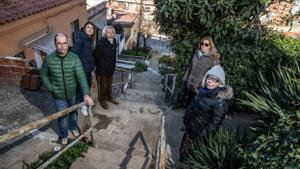

Calza un medio botín como los de ir de excursión y carga una sola bolsa de la compra: un detergente, galletas y algún tomate. Joan Collado es uno de los vecinos que desde hace décadas debe salir cada día a buscar la compra por fascículos, porque no puede cargar más de una bolsa por viaje.
Vive en el pasaje Ceuta, en pleno Turó del Carmel (Horta-Guinardó), una calle con un gran desnivel que solo salvan unas destartaladas e irregulares escaleras: “Necesito las manos para agarrarme a la barandilla, por eso mi mujer y yo salimos a comprar poco a poco”.
Montse Bosch, otra vecina de la calle, tiene otra táctica para resolver este problema cotidiano: viste pantalón de chándal, zapatillas deportivas y una mochila con la puede cargar peso sin miedo a caer. Sin duda la más perjudicada es Mari Carmen, que lleva 17 años atrapada en su propia casa, como explica El Periódico en este impactante reportaje.
